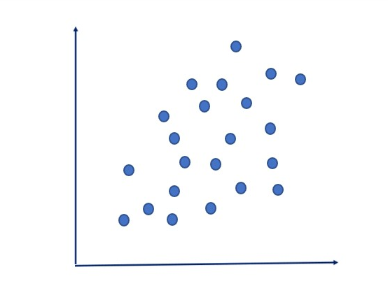
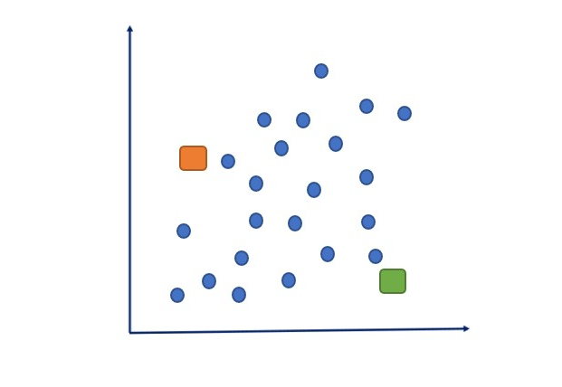
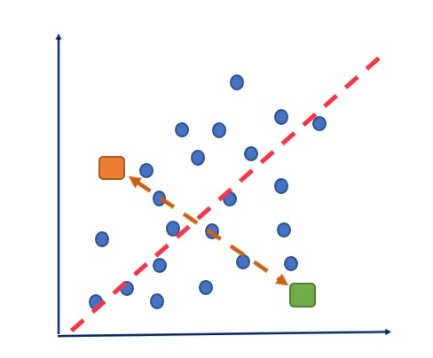
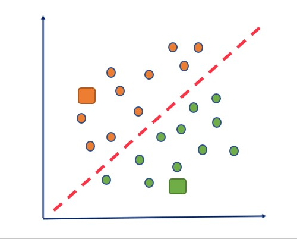
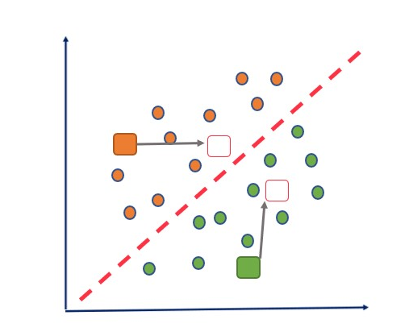
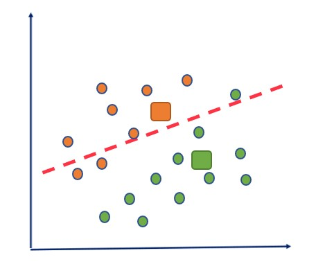
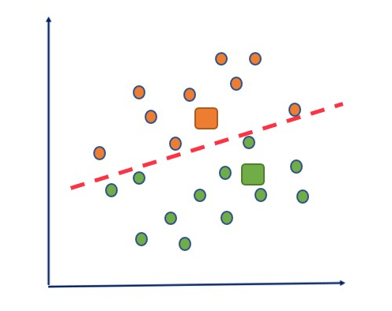
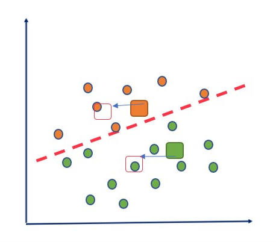
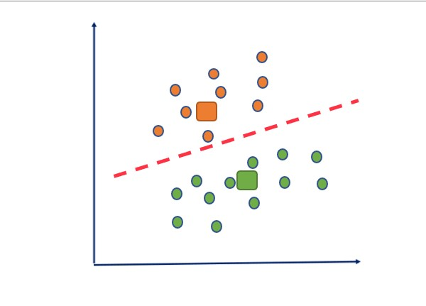
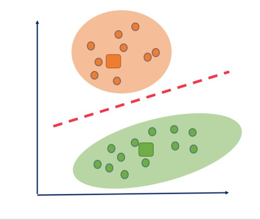

The working of the K-Means algorithm is explained in the below steps:
Select the number K to decide the number of clusters.
Select random K points or centroids. (It can be other from the input dataset).
Now Assign each data point to their closest centroid, which will form the predefined K clusters.
Calculate the variance and place a new centroid of each cluster.
Repeat the third steps, which means reassign each datapoint to the new closest centroid of each cluster.
If any reassignment occurs, then go to step-4 else go to FINISH.
The model is ready.
Let's understand the above steps by considering the visual plots:
Suppose we have two variables M1 and M2. The x-y axis scatter plot of these two variables is given below:

Let's take number k of clusters, i.e., K=2, to identify the dataset and to put them into different clusters.
It means here we will try to group these datasets into two different clusters.
We need to choose some random k points or centroid to form the cluster. These points can be either the points from the dataset or any other point. So, here we are selecting the below two points as k points,
which are not the part of our dataset. look at the below image:

Now we will assign each data point of the scatter plot to its closest K-point or centroid. We will compute it by applying some mathematics that we have studied to calculate the distance between two points. So,
we will draw a median between both the centroids. Consider the below image:

From the above image, it is clear that points left side of the line is near to the K1 or blue centroid, and points to the right of the line are close to the yellow centroid.
Let's color them as orange and green for clear visualization.

As we need to find the closest cluster, so we will repeat the process by choosing a new centroid. To choose the new centroids, we will compute the center of gravity of these centroids,
and will find new centroids as below:

Next, we will reassign each datapoint to the new centroid. For this, we will repeat the same process of finding a median line.
The median will be like below image:

From the above image, we can see, one green point is on the left side of the line, and two orange points are right to the line. So,
these three points will be assigned to new centroids.

As reassignment has taken place, so we will again go to the step-4,
which is finding new centroids or K-points.
We will repeat the process by finding the center of gravity of centroids,
so the new centroids will be as shown in the below image:

As we got the new centroids so again will draw the median line and reassign the data points.
So, the image will be:

We can see in the above image; there are no dissimilar data points on either side of the line,
which means our model is formed. Consider the below image:

As our model is ready, so we can now remove the assumed centroids, and the two final clusters will be as shown in the below image: